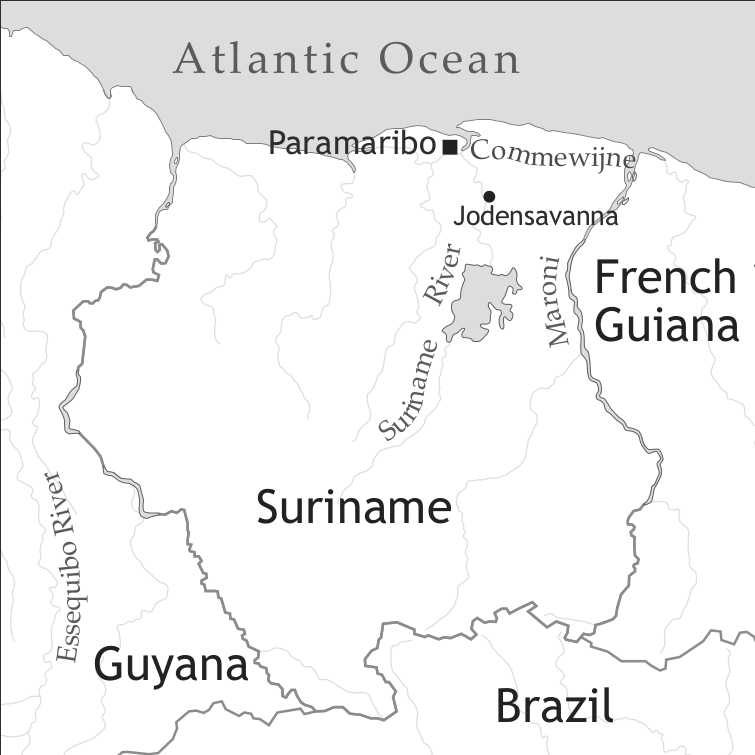

by Bettina Migge

Price (2002) conservatively estimated that the three varieties of Nengee altogether are spoken by some 66,500 people. Ndyuka is spoken by about 32,000 speakers in Suriname, 14,000 in French Guiana, and 4,500 in the Netherlands. The 6,000 Aluku speakers predominantly reside in the interior villages and in urban areas of the French overseas department of French Guiana and of metropolitan France. The estimated 6,000 speakers of Pamaka reside in roughly equal numbers in Suriname and French Guiana and a small number also lives in the Netherlands and metropolitan France. Members of all three communities currently have an important presence in the urban centres of Suriname and French Guiana.
Suriname was first settled in 1651 by about 100 English settlers and their slaves from Barbados. Initial settlers set up smaller farms, but by the mid 1660s there were already a number of sugar plantations that involved a relatively significant labour force and low levels of contact between Europeans – planters and indentured labourers – and African slaves (Arends 2002: 116). “This suggests not only that the restructuring of English began relatively early but also that it was perhaps more drastic than in other colonies, which went through longer establishment phases” (Arends 2002: 117).
Just before the settlement changed ownership to the Dutch in 1667,1 the English planters were joined by Sephardic Jews coming from Essequibo (Guyana), northern Brazil and particularly Europe. They set up plantations on the Commewijne River and especially the upper Suriname River in an area referred to as Joden Savanne. The Portuguese element in the Surinamese creoles originates with this community (but cf. Smith 1987 and 2002).
After economic decline in the period from 1667 to 1690, the colony expanded rapidly in the period between 1690 and 1775. African slaves significantly outnumbered the European population (see Table 1), and working and living conditions, as well as codes of interaction led to a sharp reduction in contact between the population groups. Although it had been taken over by the Dutch, Dutch was not widely used in the colony and did not have a significant influence on the emerging plantation varieties. The main lexical base of the Suriname creoles is English. The first languages of the Slaves, however, exerted an important influence on the structural makeup of these languages (cf. Arends 1995; Migge 2003a).
The figures include children and adults. The figures for 1652–1679 are taken from Voorhoeve & Lichtveld (1975, p. 3). The figures for 1684–1795, based on head tax payments, are taken from Postma (1990, Table 8.1, p. 185).
| Years | Europeans | Africans | Total | Ratio |
| 1652 | 200 | 200 | 400 | 1:1 |
| 1661 | 1,000 | 2,000 | 3,000 | 1:2 |
| 1665 | 1,500 | 3,000 | 4,500 | 1:2 |
| 1668 | 1,070 | 1,850 | 2,920 | 1:2 |
| 1671 | 800 | 2,500 | 3,300 | 1:3 |
| 1675 | 550 | 1,800 | 2,350 | 1:3 |
| 1679 | 460 | 1,000 | 1,460 | 1:2 |
| 1684 | 652 | 3,332 | 3,984 | 1:5 |
| 1695 | 379 | 4,618 | 4,997 | 1:12 |
| 1700 | 754 | 8,926 | 9,671 | 1:12 |
| 1705 | 733 | 9,763 | 10,496 | 1:13 |
| 1710 | 845 | 12,109 | 12,954 | 1:14 |
| 1715 | 838 | 11,664 | 12,502 | 1:14 |
| 1720 | 933 | 13,604 | 14,537 | 1:15 |
| 1725 | 947 | 14,327 | 15,274 | 1:15 |
| 1730 | 1,085 | 18,190 | 19,274 | 1:17 |
| 1735 | 1,266 | 22,196 | 23,462 | 1:18 |
| 1744 | 1,217 | 25,135 | 26,352 | 1:21 |
| 1752 | ? | 37,835 | ||
| 1754 | 1,441 | 33,423 | 34,864 | 1:23 |
| 1774 | ? | 59,923 | ||
| 1783 | 2,133 | 51,096 | 53,229 | 1:24 |
| 1795 | ? | 48,155 |
Table 2 gives a break-down of the origin of the African population brought to Suriname. It illustrates that Africans were brought from a variety of regions in Africa to Suriname. The main regions were the Slave Coast (varieties of Gbe), the Loango region (varieties of Kikongo), the Gold Coast (Kwa languages, including Gbe) and the Windward Coast (Mande languages). At any one point in time, the slave population was relatively homogeneous, however, because slave trading activities tended to target mainly one or two areas during specific periods. Table 2 suggests that speakers of Kwa languages, specifically speakers of varieties of Gbe, must have played an important role in the formation of the plantation varieties that developed into the different present-day creoles of Suriname.
Throughout the history of the colony, Suriname was significantly affected by maroonage, defined as a form of resistance to slavery involving desertion of the plantation with the aim of living out of the reach of the institution of slavery (Hoogbergen 1990; 1983). The first slaves probably already escaped during the English period, and maroonage intensified in the first part of the 18th century. The actual dates of their flight are difficult to establish because of the hidden nature of maroonage and because communities emerged over a relatively long time. The ancestors of the Ndyuka (or Aukaners) and Aluku seem to have fled the plantations starting from around 1710 and 1712 respectively while the Pamaka (or Paramaccaners) are said to have fled around the middle of the 18th century.2 In 1762 the Ndyuka signed a peace treaty with the colonial government. However, other communities, particularly the Aluku, continued to battle colonial forces until the end of the 18th century when they permanently established themselves in the interior of the French Guianese rainforest and came under the protection of the governor of that colony. Today, six Maroon communities survive: The Saamaka (or Saramaccaners), the Matawai, the Kwinti, the Ndyuka, the Pamaka and the Aluku. The members of each community insist that they speak their own languages referred to by the same name. However, from a purely linguistic point of view Aluku, Ndyuka and Pamaka have to be considered to be varieties of the same language, called Nengee here.
Source: Arends (1995, Table 2, p. 243)
| Years | Windward Coast | Gold Coast | Slave Coast | Loango | Subtotal | Unknown | Total | |||||
| N | % | N | % | N | % | N | % | N | N | % | N | |
| 1652–79 | - | - | - | - | - | - | 260 | 5.4 | 260 | 4,574 | 94.6 | 4,834 |
| 1680–89 | - | - | 325 | 3.3 | 3,854 | 39.4 | 4,561 | 46.7 | 8,740 | 1,032 | 10.6 | 9,772 |
| 1690–99 | - | - | - | - | 3,147 | 42.8 | 2,999 | 40.8 | 6,146 | 1,203 | 16.4 | 7,349 |
| 1700–09 | - | - | 657 | 8.3 | 5,587 | 70.6 | 1,147 | 14.5 | 7,391 | 528 | 6.7 | 7,919 |
| 1710–19 | - | - | - | - | 5,020 | 69.0 | 1,589 | 21.3 | 6.609 | 668 | 9.2 | 7,277 |
| 1720–29 | - | - | 6,261 | 65.3 | 2,695 | 28.1 | 251 | 2.6 | 9,207 | 380 | 4.0 | 9,587 |
| 1730–39 | 276 | 1.5 | 9,462 | 53.7 | 5,602 | 31.8 | 1,097 | 6.2 | 16,437 | 1,192 | 6.8 | 17,692 |
| 1740–49 | 3,796 | 17.3 | 1,626 | 7.4 | 478 | 2.2 | 4,941 | 22.5 | 10,841 | 11,093 | 50.6 | 21,934 |
| 1750 | 11,959 | 46.8 | 5,125 | 20.0 | - | - | 5,927 | 23.2 | 23,011 | 2,517 | 9.9 | 25,528 |
| 1760–69 | 14,003 | 39.4 | 6,001 | 16.9 | 320 | 0.9 | 12,686 | 35.7 | 33,010 | 2,517 | 7.1 | 35,527 |
| 1770–79 | 11,293 | 45.2 | 4,840 | 19.4 | - | - | 8,193 | 32.8 | 24,326 | 654 | 2.6 | 24,980 |
| 1780–89 | 2,719 | 62.0 | 1,165 | 26.6 | - | - | 500 | 11.4 | 4,384 | - | - | 4,384 |
Suriname became independent in 1975. Although it has always been highly multilingual, Dutch is the only official language of the country and the only medium of instruction in schools. Maroons living in the village context generally have very little contact with Dutch and consequently no or low proficiency in it. Knowledge of Dutch is, however, on the rise among Maroons in urban and semi-urban contexts and among the younger generations due to higher rates and longer periods of school attendance. Many Maroons understand and have varying degrees of speaking competence in Sranan, which functions as the country’s lingua franca and has become much more widely acceptable in urban settings, including formal settings, since the civil war in the 1980s. Maroon languages do not have an official status, but negative opinions towards them have lessened since the civil war. Maroon languages function as the main medium in intra-Maroon interactions and are closely tied up with Maroon identities. Younger Maroons commonly code-mix and code-switch between Eastern Maroon varieties, Sranan and Dutch (Migge 2007).
The Maroon languages in French Guiana (Aluku, Ndyuka, Pamaka, Saamaka) have achieved some recognition in recent years as they were given the status of langue de France.3 While they still have low status, they are increasingly being learned by non-Maroons (Léglise & Migge 2006) and they receive some attention in schools in Maroon-dominant areas (Migge & Léglise 2010).
Nengee has five short and five long oral vowels of the same quality. Vowel length has a meaning-distinguishing function (e.g. fo ‘four’ versus foo ‘bird’). In word-final position differences in vowel length are used to differentiate varieties of Nengee; long vowels in words like wataa ‘water’ are associated with Ndyuka, while a short vowel (wata) indexes membership in the Aluku or Pamaka community (cf. Goury & Migge 2003: 46–50).
Nengee also has two types of diphthongs, namely those that involve movement from a low central or mid back position to a front position, i.e. [ai] kay ‘fall’, [oi] koy ‘take a walk’, and those involving movement from a low central or a mid back position to a high back position, i.e. [au] kaw ‘cow’ and [ou] how ‘machete’.
Vowels are typically nasalized when they precede a nasal sound.
When two vowels occur side by side in a phrase, either the first one or the last one becomes a semi-vowels, e.g. fa a e go? ‘how are you?’ is pronounced [faaygo] or U o gwe ‘We’ll leave’ is realized as [wo(o)gwe] (for more details, cf. Goury & Migge 2003: 39–41).
| front | central | back | |
| close | i, ii | u, uu | |
| mid | e, ee | o, oo | |
| open | a, aa |
Nengee has 26 consonants (cf. Table 4), of which at least 8 have to be considered rare sounds because they mostly occur in ideophones or, in the case of double-articulated stops and prenazalized sounds, in a relatively small number of words of African origin (these consonants are in parentheses in Table 4). /s/ in word-initial position is at times pronounced as [h], e.g. sani ‘thing’ [s/hani], but this does not appear to constitute a phonological rule.
| bilabial | labio-dental | labio-velar | alveolar | palatal | velar | glottal | ||
| plosive | voiceless | p | (kp) | t | k | |||
| voiced | b | (gb) | d | g | ||||
| prenasalized | (mb) | (nz) | (ndʒ) | (ŋk/ŋg) | ||||
| nasal | m | n | ɲ | ŋ | ||||
| trill | ||||||||
| fricative | voiceless | f | s | h | ||||
| voiced | (v) | (z) | ||||||
| affricate | voiceless | tʃ | ||||||
| voiced | dʒ | |||||||
| approximant | w | l | j <y> |
There are two phonological rules. First, the phoneme /s/ is commonly realized as [ʃ] when it precedes a high front vowel, e.g. sikoo [ʃikoo] ‘school’ versus santi [santi] ‘sand’. In Pamaka this rule also applies when [s] precedes [e], e.g. sen [ʃen] ‘shame’. Second, word or phrase-final nasals are always realized with a velar place of articulation, e.g. lon [ɫõŋ] ‘run’. There is thus no real contrast between [n]/[m] and [ŋ]. In syllable-final position nasals assimilate in place of articulation to a following consonant. If verbs ending in a nasal are followed by the third person singular object pronoun en, the final nasal is realized as m, e.g. a fon en ‘s/he hit him’ [a fom eŋ], and in Ndyuka varieties, the high front vowel [i] is epenthesized following the nasal, e.g. a fon en [a fomi eŋ].
George and Mary Huttar were the first to propose a phonemic orthography for varieties of Nengee in Suriname. This orthography was used to prepare educational materials, storybooks and a translation of the New Testament and the first dictionary and grammar (of Ndyuka).
Nouns are morphologically invariant, e.g. wan bofoo, dii bofoo ‘one tapir, three tapirs’, den sii ‘the seeds’. Natural gender can be marked by juxtaposing the noun with the forms man ‘male’ and uman ‘female’, e.g. man/uman foo ‘male/female bird’. Gender-specified personal nouns may also be formed by combining non-personal words such as nouns and verbs with the nouns uman and man, e.g. seliman/seliuman (lit. sell-person) ‘vendor’, paandasiman/uman (lit. village-person) ‘person from the same village’ to create agentive and ‘member/owner of’-type nouns. Nouns with uman appear to be more compound-like. Those with man are much more frequent and have a generic interpretation, e.g. beeman ‘pregnant woman’ (Migge 2001).
The most widely used word formation process in Nengee is compounding. However, some nouns such as man ‘person, man’ and pe ‘place’ and to a lesser extent nenge(e) ‘(black) person’ appear to be suffix-like (cf. Goury 2003: 87–89; Goury & Migge 2003: 74–80).
Plurality in nouns is generally indicated by the definite article den, e.g. den wagi ‘the cars’, or by a quantifying modifier, e.g. fo/omen/wantu supuun ‘four/many/some spoons’. Mass nouns are not formally distinguished from count nouns, e.g. wata ‘water’, wan wata ‘a (glass of) water’. Nouns with generic reference often do not involve an article, e.g. nyamasu na wan foo ‘The vulture is a thief’, but they may also involve a definite article (cf. Huttar & Huttar 1994: 454–455).
Nengee has a singular and a plural definite article, a and den, and an indefinite article, wan. All three articles occur in prenominal position, e.g. wan/a nefi ‘a/the knife’ and den nefi ‘the knives’. In Nengee demonstrative modification is realized using the locational adverbs ya ‘here’, de ‘there’ and anda ‘over there’ that get postposed to the noun and the definite article has to precede the noun, e.g. a pikin ya ‘this child’, den pikin anda ‘those children (far away)’.
There are two types of possessive constructions. Adnominal possessives precede the noun and have the same forms as the dependent object pronouns (see Table 5), e.g. en osu ‘her house’, u goon ‘our field’. Pronominal possessives consist of the preposition fu and the personal pronoun (cf. 1).
Possessive noun phrases that involve two NPs either involve the preposition fu (cf. 2) or juxtaposition of the two nouns (cf. 3). In (2) the possessor is selected by the possessed element and thus follows it. In (3), the order is reversed.
(2) a pikin fu a kownu
det.sg child poss det.sg king
‘the king’s child’
(3) a kownu pikin
det.sg king child
‘the king’s child’
In attributive position, property items precede nouns, e.g. wan saapu nefi ‘a sharp knife’, do not involve agreement with the noun, and are best described as adjectives. Reduplicated property items express approximation, e.g. wan saapusaapu nefi ‘a sharpish knife’, a bakuba ya lepilepi ‘This banana is half ripe’. Reduplicated property items that are selected by the copula de (4), however, convey a (temporary) state meaning and have to be characterized as adjectives (Huttar & Huttar 1997; Migge 2003b).
(4) A impi de nati~nati.
det.sg shirt cop wet~wet
‘The shirt is in a wet state.’
In comparative constructions of equality, the standard is marked by e(n)ke which follows the property item (5).
(5) En osu moy eke a osu/du fu Saafika.
her house nice like det.sg house/the.one poss Saafika
‘Her house is as nice as Saafika’s.’
In constructions involving comparison, moo introduces the standard of comparison. It generally follows the property item, but it may also precede and follow it (6).
(6) En osu (moo) bigi moo du fu Saafika.
her house (more) nice more the.one poss Saafika
‘Her house is nicer than Saafika’s.’
In superlative constructions, the element in focus is expressed as a definite NP and moo functions as a modifier for the property item which in turn functions as a predicative adjective (7). It is also possible to use a universal standard of comparison.
(7) En osu na a moo moy osu fu a konde.
her house cop det.sg more nice house poss det.sg village
‘Her house is the nicest house in the village.’
(8) En osu moy moo ala den osu fu a konde.
her house nice more all det.pl house poss det village
‘Her house is the nicest of all the houses in the village.’
Nengee has only one set of pronouns (see Table 5), but some of these pronouns such as mi, den and possibly en may be shortened to m’, de and e, respectively, e.g. m’án sabi en ‘I don’t know him’, m’boli a sani gi i ‘I cooked the thing for you’. Nengee also distinguishes emphatic forms for the second and third person singular, i.e. yu and en. Note, however, that Ndyuka speakers appear to use yu also in unemphatic positions. When the plural pronoun u is used to address one person, it functions as a honorific and marks respect and politeness (Huttar & Huttar 1994: 462). The pronouns i and u also undergo phonological change when they are preposed to vowel-initial elements: [i] becomes [j] and [u] becomes [w], e.g. u o si en [woʃien] ‘We’ll see her’, i án sabi no? [jansabino] ‘right?’.
Nouns and pronouns are conjoined by the preposition anga ‘with, and’, e.g. mi anga en sidon ya ‘me and him sat here’, teki wan nefi anga wan supuun ‘take a knife and a spoon’.
Note: En always has emphatic/contrastive focus meaning in subject position.
yu generally has an emphatic meaning, but is also used unemphatically in Ndyuka varieties.
wi is typical of Ndyuka varieties.
| subject pronouns | object pronouns | adnominal possessive pronouns | |
| 1sg | mi/m | mi | mi |
| 2sg | i/yu | i/yu | i/yu |
| 3sg | a/en | en | en |
| 1pl | u/wi | u/wi | u/wi |
| 2pl | u | u | u |
| 3pl | de(n) | den | de(n) |
Nengee uses eight verbal markers to express tense, aspect and mood categories (cf. Table 6).
Source: Migge (2006: 34ff), Winford & Migge (2007: 78)
| Etymology | lexical aspect | tense/aspect | |
| be | < English been | all | past |
| o | < English go | future | |
| Ø | dynamic | perfective | |
| Ø | - state-like - property-items |
perfective | |
| e | < English there | all | imperfective |
| kaba | < Portugese acabar | all | completive |
| sa | < Dutch zal | all | positive Potential mood |
| man (Aluku, Pamaka) | < English man | all | negative potential mood |
| poy (Ndyuka) | < Portuguese pode | all | negative potential mood |
| mu | < English must | all | necessity |
Nengee does not neatly distinguish between dynamic verbs on the one hand and stative or adjectival ones on the other and all verbs may be combined with the imperfective marker e. In the case of property items, marking with e gives rise to an inchoative interpretation and zero-marked property items have a completed-process reading. Verbs generally have a past tense reading when no markers are present and an ‘in-process’ reading when they are marked by e. A few verbs like sabi ‘know’ and lobi ‘love, like’, however, take on a present tense reading with zero-marking and a continuous aspect reading when marked by e. Be is a relative past marker. It is used to indicate that an event, state or narrative has occurred prior to speaking time (e.g. a be si en ‘she saw him’) or prior to another point in time in the past (see (9)).
Be is not obligatory: Once past time is indicated using be or a temporal adverbial, zero-marking is the norm in narratives. O marks later time reference and such constructions have strong overtones of prediction, e.g. a o koti en goon tamaa ‘He will prepare his field tomorrow’. Kaba is the only TMA element that occurs post-verbally. It indicates that an event is completed, e.g. a nyam en kaba ‘She’s already eaten it’ and in the case of states it conveys the sense of a state beginning in the past and continuing to the reference point, e.g. a sabi a toli kaba ‘He already knows about the matter’. There is still discussion whether kaba is an adverb or aspectual auxiliary.
Potential modality in Nengee is expressed using sa in positive contexts and man (Aluku, Pamaka) or poy (Ndyuka) in negative contexts. Sa expresses four broad meanings: Physical ability (cf. 10), root possibility (cf. 11), permission (cf. 12), and epistemic possibility (cf. 13).
(10) A sa diki 50 kilo.
she can lift 50 kilo
‘She’s able to lift 50 kilos.’
(11) En wagi seeka, a sa go a foto.
her car repair she can go loc Paramaribo
‘Her car’s been repaired, she can now go to Paramaribo.’
(13) Alen sa kay tide.
rain can fall today
‘It may rain today.’
Poy and man have strong overtones of ability (Migge 2006; Migge & Winford 2009) and can therefore not be easily used to express negative epistemic possibility; a construction involving the adverb kande ‘it’s possible’ in conjunction with o is used instead, e.g. kande alen ná o kay tide ‘It may not rain today’. They can, however, express all the other three meanings, e.g. lanti taki osu ná man/á poy meki ya ‘The government says houses may not be build here’. Obligation is expressed using a range of items. Mu expresses weak obligation or expectation (cf. 14) and strong obligation (cf. 15).
(14) I mu sipali i moni.
you must spare your money
‘You should save your money.’
(15) Ala teiti, wan pikin mu (e) lespeki en mma anga en ppa.
all time one child must (ipvf) respect its mom and its dad
‘A child must always obey its parents.’
Mu also expresses probability, e.g. J. mu de a osu nownow. ‘J. must be at home right now’. Musu (fu) is used to express very strong obligation (cf. 16) and probability (cf. 17).
(17) Den pikin musu nyan a kuku.
def.pl child must eat def.sg cake
‘The children must have eaten the cake (it’s no longer there).’
Strong obligation is also expressed using a(bi) fu ‘have to’, e.g. den abi fu didon fuuku ‘they must go to bed early’. Desire is conveyed by the modal verb wani, e.g. mi wani nyan switi sii ‘I want to eat sweets’. Wani can also take inanimate subjects, e.g. a osu wani booko ‘the house is about to cave in’. Abi fanawdu expresses need, e.g. mi abi tu supuu fanawdu nownow de ‘I need two spoons now’.
Several of the TMA items may be combined to create additional temporal distinctions. For instance, imperfective e may be combined with past-tense be to convey a past progressive meaning, e.g. B. be e muliki u tee ‘B. was annoying us very much’. Or man/poy may be combined with e to emphasize the habitual nature of an ability, e.g. mi ná e man tii boto bun ‘I cannot steer boats well’. O may combine with man/poy to express future capacity (cf. 18).
Be o/sa together convey past or unrealized possibility, e.g. J. be sa/o teki a moni ma án du en. ‘J. could have taken the money but he didn’t do it’. For further combinations, cf. Goury & Migge (2003: 99–103).
Nengee has two verbal negators, ná and á(n), which precede the verb. Ná is used before a vowel, e.g. u ná o nyan moo? ‘You won’t eat anything else?’, in imperative constructions, e.g. ná bali so ‘don’t shout like that’, and to convey (negative) emphasis, e.g. mi ná wani a sani ya seefi ‘I don’t want this at all’. Á (Ndyuka) and án (Aluku, Pamaka) are employed with consonant-initial verbs, e.g. mi á sabi gi en ‘I don’t know about him/what he thinks’.
Nengee also uses constituent negation expressed by ná wan ‘not one’ preceding a constituent that is headed by a noun (19a). When it occurs in combination with clausal negation, the negated constituent does not occur in clause-initial position (19b) unless it is clefted (cf. Migge & van den Berg 2009).
Nengee has two copula morphemes. The copula de, which derives from the English locational adverb there, is fully verbal and is used to predicate a wide range of elements such as stative adjectives (see ex. (4)), locational phrases (e.g. u de a osu ‘we are at home’) and adverbs (e.g. mi o de anda taa wiki ‘I’ll be over there next week’). It is also used to express existence, e.g. moni de ‘there is money’. The copula (n)a, which derives from the focus or presentative element (n)a (Arends 1986; Migge 2002), is found in equative and attributive nominal constructions, e.g. mi na Baa Sima uman ‘I’m Mr. Sima’s wife’, den na lantiman ‘they are people working for the government’, and is used to predicate possessive phrases, as in (20). (N)a is not verbal as it cannot be preceded by TMA markers, e.g. mi *o (n)a data ‘I’ll be a doctor’. If it becomes necessary to mark TMA distinctions, the verbal copula de is also used in equative and possessive contexts instead of (n)a: mi wani/o de guduman [I want/fut cop rich-person] ‘I want to be/will be a rich person’. The past marker be is the only TMA marker that may co-occur with (n)a. However, it follows (n)a, e.g. (en) na be wan yefolow [she cop pst one/a teacher] ‘she was a teacher’.
(20) A boto ya(,) a fu mi.
det.sg boat dem prep poss me
‘This is my boat’.
In predicative position, property items function as verbs. They can be modified by TMA markers, e.g. a manyan o lepi ‘the mango will be ripe’; when they occur without TMA markers they have a resultative meaning. A number of them can also be used transitively, e.g. a san e lepi den manyan ‘the sun is ripening the mangos’ (cf. Migge 2000).
The word order in Nengee is SVO, e.g. a diingi tu bii ‘she drank two units of beer’. In the case of ditransitive verbs, the indirect object either precedes the direct object in a double object construction, e.g. a soy den pikin a wagi ‘He showed the children the car’, or the recipient object (indirect object) is realized as a prepositional phrase headed by gi that follows the direct object, e.g. a soli a wagi gi den pikin ‘She showed the children the car’.
Nengee has a range of so-called serial verb constructions. They usually occur following the main verb and express a range of meanings such as directionality, e.g. a waka kon a mi [she walk come to me] ‘she came to me’, a waka go ne en uman [he walk go near his wife] ‘he went to his wife’, a kay komoto ne en sodo [he fall come.out near his house.on.stilts] ‘he fell off his house on stilts’. Gi expresses a range of dative-type meanings such as recipient, beneficiary (e.g. den siibi a osu gi me ‘they swept the house for me’), and experience (e.g. a sani hogii gi mi tee ‘I’m very embarrassed about this’ (Migge 1998)). Two-verb constructions also express resultative meanings, e.g. a naki a bata booko [he hit the bottle break] ‘he broke the bottle by hitting’.
Adverbs usually follow the verb and object, e.g. a lobi en tee/tumusi ‘He loves her very much/too much’, but adverbs like namo may either occur at the end or at the beginning of a sentence, e.g. a mu kon a mi namo or namo namo a mu kon a mi ‘she must absolutely come to me’.
Locational phrases also follow the verb and object. Locational phrases in Nengee involve a general locational marker (n)a and a nominal locational specifier (tapu, ondo(o), mindi(i) etc.) that follows the NP and is in a possessive-type relationship with it, e.g. a bali de na a sutuu ondoo ‘the ball is under the chair’. The only locational specifier that seems to be grammaticalizing into a prepositional-type element is ini. It often precedes the NP or is found preceding and following the NP (cf. 21).
(21) A iti en koosi a ini a dosu (ini)
she throw her clothes loc in(side) det.sg box (inside)
‘She threw her clothes into the box.’
There are two types of passive phrases in Nengee. First, an active verb is combined with the pronouns den or u/wi, e.g. den ná e booko a domi so! ‘They don’t break the cassava dough like this’. Second, the patient object occurs in subject position, e.g. Sopi ná e diingi a ini a boto ‘Rum is not consumed in the boat’.
A peculiarity of Nengee is that corporal reactions, diseases and emotions are expressed with a transitive verb (lit. ‘kill’, ‘eat’, ‘get’):
(22) a. Kaka e kii mi.
excrement ipvf kill me
‘I have to relieve myself.’
b. Mi ede e nyam mi.
my head ipvf eat me
‘I have a headache.’
c. Feba kisi mi.
fever get me
‘I had a fever.’
Reflexive constructions can be expressed by different strategies:
(i) No marking, especially for some grooming verbs, e.g. a e wasi ‘she’s washing herself’
(ii) use of a body part noun, e.g. a e kan en uwii ‘she’s combing herself (lit. her hair)’
(iii) use of the reflexive element seefi, e.g. a e luku en seefi a ini a sipikii ‘She’s looking at herself in the mirror’
(iv) use of the noun ‘body’, e.g. a e luku/wasi en sikin ‘He’s looking at/washing himself (lit. his body)’
Causative constructions are encoded by the verb meki ‘to make’, e.g. a uman meki den lanti gi en en pampila ‘the woman made the government officials give her her papers’.
In interrogative sentences, the interrogative word is found clause-initially.
Polar questions are typically marked by a rising intonation.
In focus constructions, the subject is preceded by the focus and presentative marker (n)a. A focused object and prepositional phrase are moved to the left following the focus marker. In order to focus a verb or to add emphasis, the verb is copied to the front of the sentence following the focus marker and a copy is left in situ as well, e.g. a nyan a baala mu nyan [foc eat the boy must eat] ‘The boy must eat’.
There are two strategies for expressing paratactic constructions: Juxtaposition and use of coordinating conjunctions. Juxtaposition is widely used when narrating events involving the same agent or subject; the subject may be repeated or not. Usually, the events take place in succession and therefore involve the same tense and aspect marking.
(24) Den e koy, den e go dise, den e go anda.
they ipvf stroll they ipvf go over.there they ipvf go over.there
‘They stroll around, they go over here, they go over there.’ (Huttar & Huttar 1994: 227–8)
If the subject and object are co-referential, they are omitted in the second phrase.
(25) A booko ala den sii fu mi ø nyan ø.
she break all det.pl fruit poss me she eat them
‘She broke off all of my fruits and ate them.’
Overt coordinators include (da) soseefi ‘and also’, ne(en) ‘and then’, da ‘and then’.
Contrast is expressed by ma ‘but’ and toku(so) ‘however’.
(29) Mi boli ma a án nyan moo.
I cook but he neg eat anymore
‘I cooked but he did not eat anything anymore.’
The complements of utterance, perception and knowledge verbs are usually introduced using the complementizer taki, which also functions as a quotative.
(31) U be yee taki a teki M. man, B.
we pst hear comp he take M. man, B.
‘We heard that she had an extramarital relationship with M’s husband B.’ (PM 17)
A cause or a reason for an action is expressed using fu ‘in order to’ and bika ‘because’.
Temporal clauses are introduced by di (past, intentional future) and te (habitual, prospective future).
Restrictive and non-restrictive relative clauses are generally marked by di, which alternates with san ‘what’ in modern varieties. The relative marker may also be omitted under certain conditions (cf. Huttar & Huttar 1994: 90).